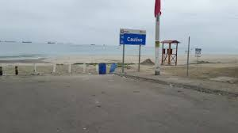
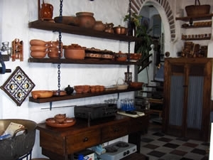
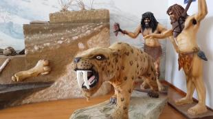

| sitios turisticos | costumbres | situacion geografica | galeria | home |
La Libertad, Ecuador, ofrece varios lugares turísticos atractivos, incluyendo su
malecón, playas como la de Cautivo, y sitios históricos como el Museo Casa
León y el Museo Paleontológico de la UPSE. Además, el área es conocida por
su comida económica y lugares de esparcimiento familiar.
Un paseo marítimo con áreas infantiles, escolleras
que forman piscinas naturales, y opciones de comida.
Una playa popular en La Libertad, ideal para disfrutar del mar y el sol.
Un museo que exhibe la historia y cultura local.
Un museo que presenta la riqueza paleontológica de la región.
